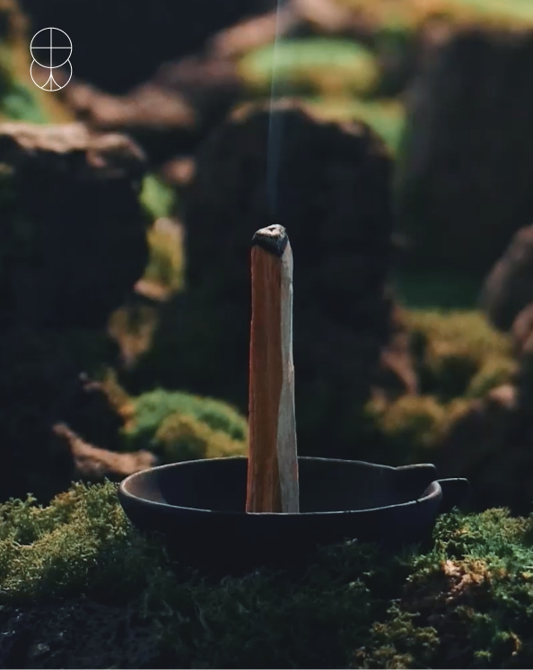
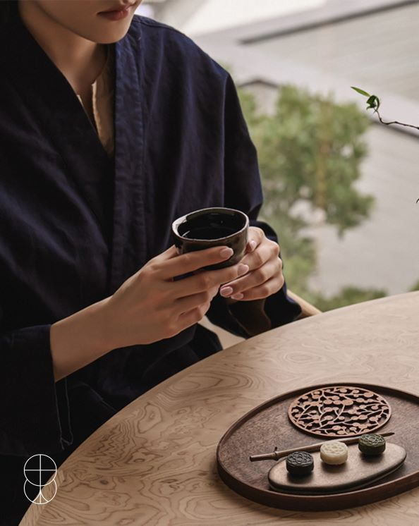
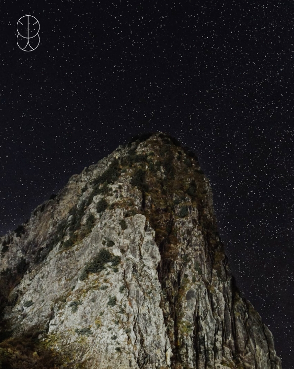
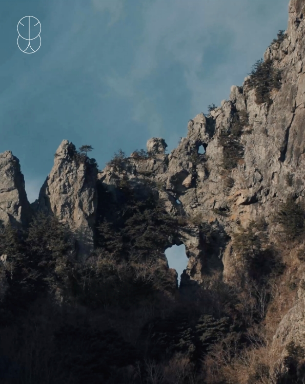
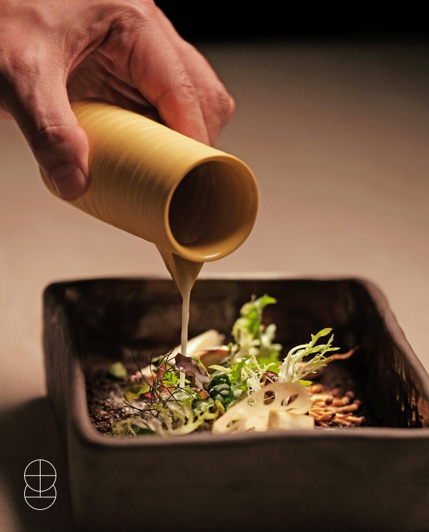
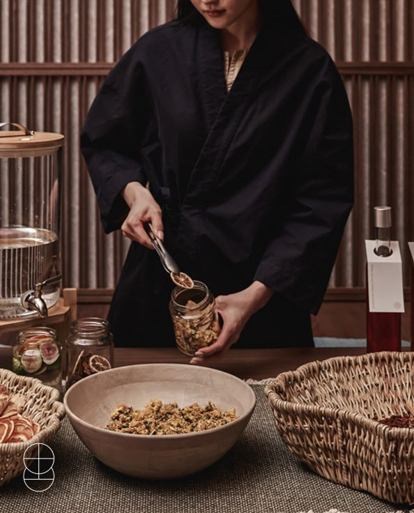
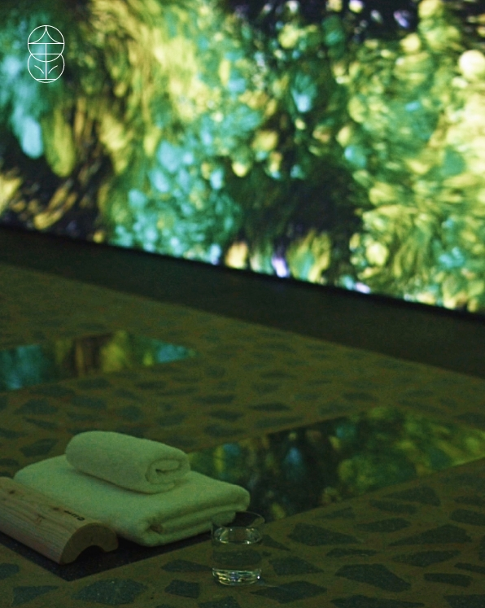
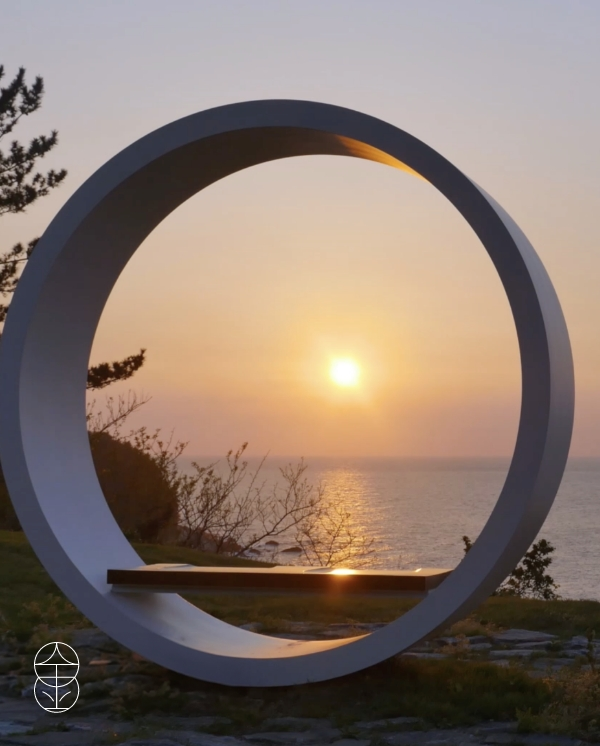
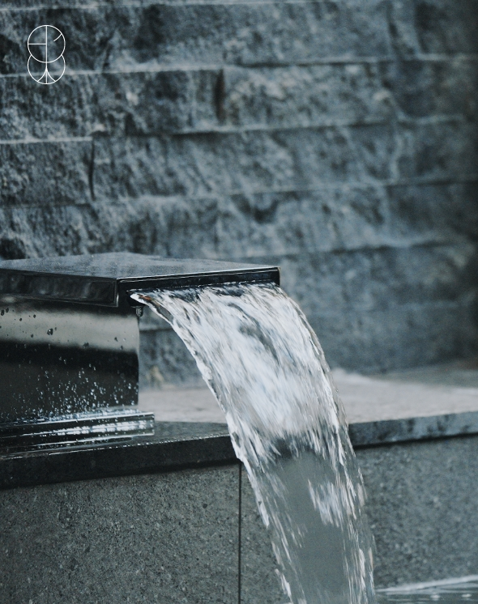
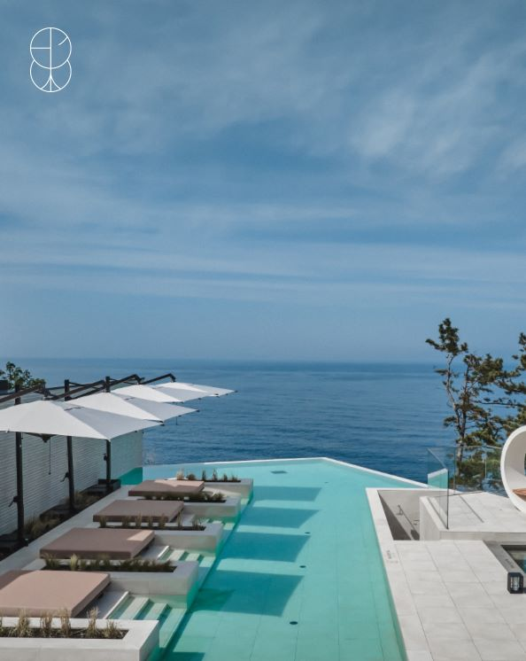

‘순환상생’의 여정
코스모스 울릉도에서 선사하는 순환상생 여정은 대자연의 순환을 체험하고
부정적인 에너지를 비우며 행운과 번영으로 채워가는 경험입니다.










목의 여정 - 목향
행운과 번영을 위한 여정의 시작을 축하하며 속세의 부정적 에너지를
정화한다는 의미로 객실에서 목향을 태워 드립니다.
목의 여정 - 웰컴티 세레모니
코스모스 울릉도에 도착을 환영하며 울릉도 식자재로 만든 다과를 즐기며
고된 여행을 위로 받아 보세요. 행운과 번영을 상징하는 심볼을 선물해 드립니다.
화의 여정 - 파이어 핏
울릉도의 음과 양이 완벽한 조화를 이루는 코스모스의 파이어 핏에서
송곳산에 걸린 달을 맞이하며 불을 피우는 달집사르기로 나만의 성공을 기원해 보세요.
화의 여정 - 송곳산의 신화
옥황상제가 천상으로 사람을 데려가기 위해 낚시를 하며 뚫었다는 전설 속
송곳산의 5개 구멍을 찾아 나만의 성공을 기원해 보세요.
토의 여정 - 라 울
울릉도의 대자연이 선물해준 식재료에서 영감을 받아 ‘순환상생의 보양’의 미식을 제공하는
울릉 컨템포러리 다이닝 ‘라 울’에서 사랑하는 사람들과 먹고 마시는 행복을
누려보세요.
토의 여정 - 오행주
땅의 건강한 재료로 담근 오행주는 행운과 번영을 상징합니다.
토의 기운을 품은 재료들이 조화롭게 어우러진 오행주를 마시며 행복을 누려보세요.
금의 여정 - 르 플로
르 플로에서 스톤테라피를 체험해 보세요. 파동석 위에서 부정적인
에너지를 비워내고 신체적, 정신적인 균형의 건강을 느껴 보세요.
금의 여정 - 코스모스 링
코스모스의 양(陽)의 링에 앉아서 울릉도의 선물인
일출과 일몰을 바라보며 마음의 균형을 찾아 보세요.
수의 여정 - 프라이빗 자쿠지
객실에 있는 프라이빗 자쿠지에서 용출수를 체험하며
긍정적인 에너지의 풍요로움을 느껴보세요.
수의 여정 - 인피니티 풀
인피니티 풀에서 화산섬인 울릉도의 깊은 산속에서 샘솟는
용출수를 체험하며 광활한 자연의 풍요로움을 담아보세요.